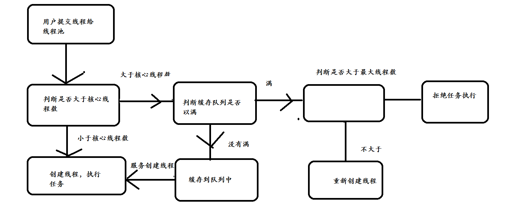

线程池的特点：
降低资源：通过重复利用已创建的线程降低线程创建和销毁的损耗
提高效率：当任务到底时，不需要等待，立即执行
方便管理：统一分配，调优和监控等
线程池的创建方式：
1.CachedThreadPool：创建一个可缓存线程池，灵活回收空闲线程
public class ThreadPoolDemo {
public static void main(String[] args) {
ExecutorService newCachedThreadPool = Executors.newCachedThreadPool();
for (int i = 0; i < 10; i++) {
final int temp = i;
newCachedThreadPool.execute(new Runnable() {
@Override
public void run() {
System.out.println(Thread.currentThread().getName() + "->" + temp);
}
});
}
}
}打印后可以发现：同一个线程有被再次利用，线程池理论大小是无限的
2.FixedThreadPool：创建一个定长线程池，可控制线程最大并发数，超出的线程会在队列中等待
ExecutorService newFixedThreadPool = Executors.newFixedThreadPool(5);其他代码不变，打印发现五个线程都在复用
3.ScheduledThreadPool：支持定时性地执行任务
public class ThreadPoolDemo {
public static void main(String[] args) {
ScheduledExecutorService newScheduledThreadPool = Executors.newScheduledThreadPool(5);
for (int i = 0; i < 10; i++) {
final int temp = i;
newScheduledThreadPool.schedule(new Runnable() {
@Override
public void run() {
System.out.println(Thread.currentThread().getName() + "->" + temp);
}
}, 3, TimeUnit.SECONDS);
}
}
}观察打印：等待3s后打印
4.SingleThreadExecutor：单线程
ExecutorService newSingleThreadExecutor = Executors.newSingleThreadExecutor();打印发现只调用了一个线程
线程池的原理：
四种方式都走了ThreadPoolExecutor的构造方法：
public static ExecutorService newSingleThreadExecutor() {
return new FinalizableDelegatedExecutorService
(new ThreadPoolExecutor(1, 1,
0L, TimeUnit.MILLISECONDS,
new LinkedBlockingQueue<Runnable>()));
} public ThreadPoolExecutor(int corePoolSize,
int maximumPoolSize,
long keepAliveTime,
TimeUnit unit,
BlockingQueue<Runnable> workQueue) {
this(corePoolSize, maximumPoolSize, keepAliveTime, unit, workQueue,
Executors.defaultThreadFactory(), defaultHandler);
}corePoolSize：最大核心线程数：实际运用线程数
maximumPoolSize：最大线程数：线程池最多创建线程数
如果当前线程池中的线程数目小于corePoolSize，则每来一个任务，就会创建一个线程去执行这个任务
如果当前线程池中的线程数目>=corePoolSize，则每来一个任务，会尝试将其添加到任务缓存队列当中，若添加成功，则该任务会等待空闲线程将其取出去执行；若添加失败（一般来说是任务缓存队列已满），则会尝试创建新的线程去执行这个任务；
如果队列已经满了，则在总线程数不大于maximumPoolSize的前提下，则创建新的线程；
如果当前线程池中的线程数目达到maximumPoolSize，则会采取任务拒绝策略进行处理；
如果线程池中的线程数量大于 corePoolSize时，如果某线程空闲时间超过keepAliveTime，线程将被终止，直至线程池中的线程数目不大于corePoolSize；如果允许为核心池中的线程设置存活时间，那么核心池中的线程空闲时间超过keepAliveTime，线程也会被终止。

写一段代码来理解：
public class MyThreadPool {
public static void main(String[] args) {
ThreadPoolExecutor threadPoolExecutor = new ThreadPoolExecutor(
//核心线程数为1
1,
//最大线程数为2
2,
//保持存活时间0毫秒，意思是用完不回收
0L, TimeUnit.MILLISECONDS,
//阻塞队列
new LinkedBlockingQueue<Runnable>(3));
threadPoolExecutor.execute(new TaskThread("task1"));
threadPoolExecutor.execute(new TaskThread("task2"));
threadPoolExecutor.execute(new TaskThread("task3"));
}
}
class TaskThread implements Runnable {
private String threadName;
TaskThread(String threadName) {
this.threadName = threadName;
}
@Override
public void run() {
System.out.println(threadName);
}
}提交task1时候，创建一个线程直接执行，此时核心线程数等于存在线程数
提交task2时候，存放在队列缓存，此时存在线程数等于最大线程数
提交task3时候，也存放在队列中缓存，而我阻塞队列大小是3，现在只存放了两个，所以不会报错
理论上，提交到task5都不会报错，最大线程数2+队列大小3=5；但是提交task6一定会报错
另外一点：如果提交到task4，打印线程名称：发现只调用了线程1，第2个线程没有调用过
因为：task1提交时候，task2，task3，task4存放在队列中，恰好到达队列最大值，所以不创建新线程，而是线程1依次执行这三个任务
合理配置线程池：
原则：
CPU密集：任务需要大量的运算，但没有阻塞的情况，CPU可以全速运行
IO密集：任务需要大量的IO操作，产生阻塞
CPU密集型线程数越少越好，最好配置为CPU核心数量
IO密集型线程数要尽量多，最好配置为CPU核心数量*2